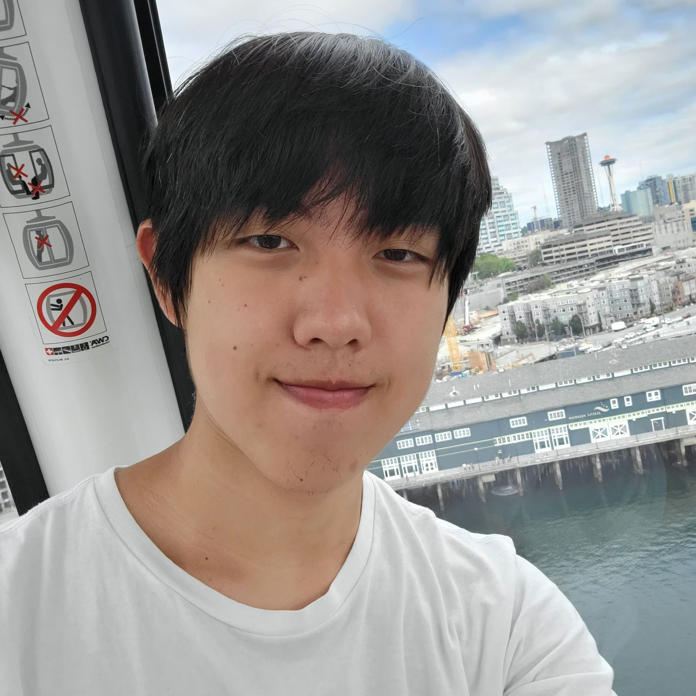

Hello everybody
My name is Jim Wu
Who am I? Computer Science and Game Development student at Northeastern University, with a passion for all things computers.
Passionate about turning ideas into software, with interest and experience with distributed systems, full-stack development, cloud development, and game development.
Massive enthusiast for CS:GO sourcemod, particularly Zombie Escape. Equally enthusiastic about racing simulation, motorsports(I love all racing series), and cars.
Where am I now? Back in Boston, to start my Fall 2022 semester, close to wrapping up my time at Northeastern University.
What am I up to? Currently working on a custom graphics engine, made with SDL2 and OpenGL. Going to be grinding classes. Also open to full time opportunities for new grads.
Where have I been? Previously interned at Amazon and Mythics Inc. as a Software Engineer, and also TA'ed for Discrete Mathematics at Northeastern.
 Resume
Resume GitHub
GitHub